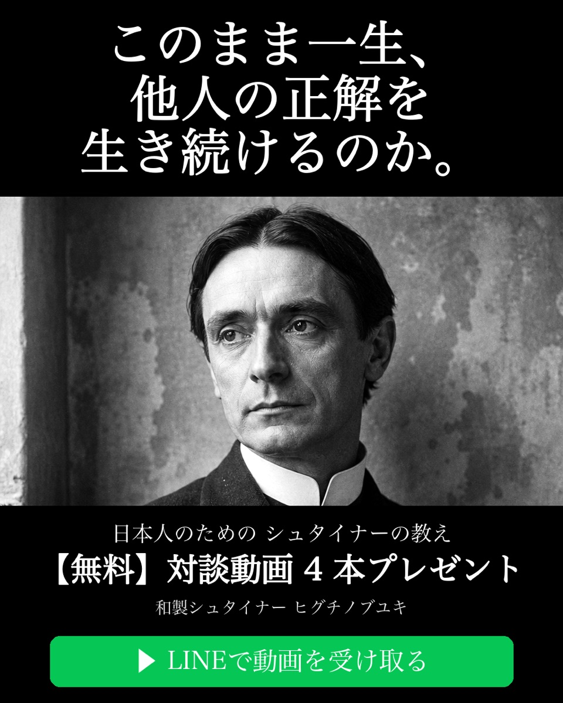
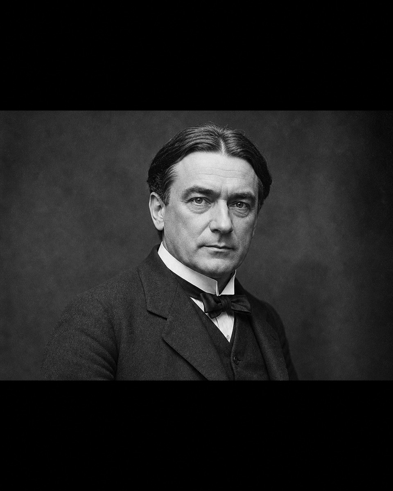
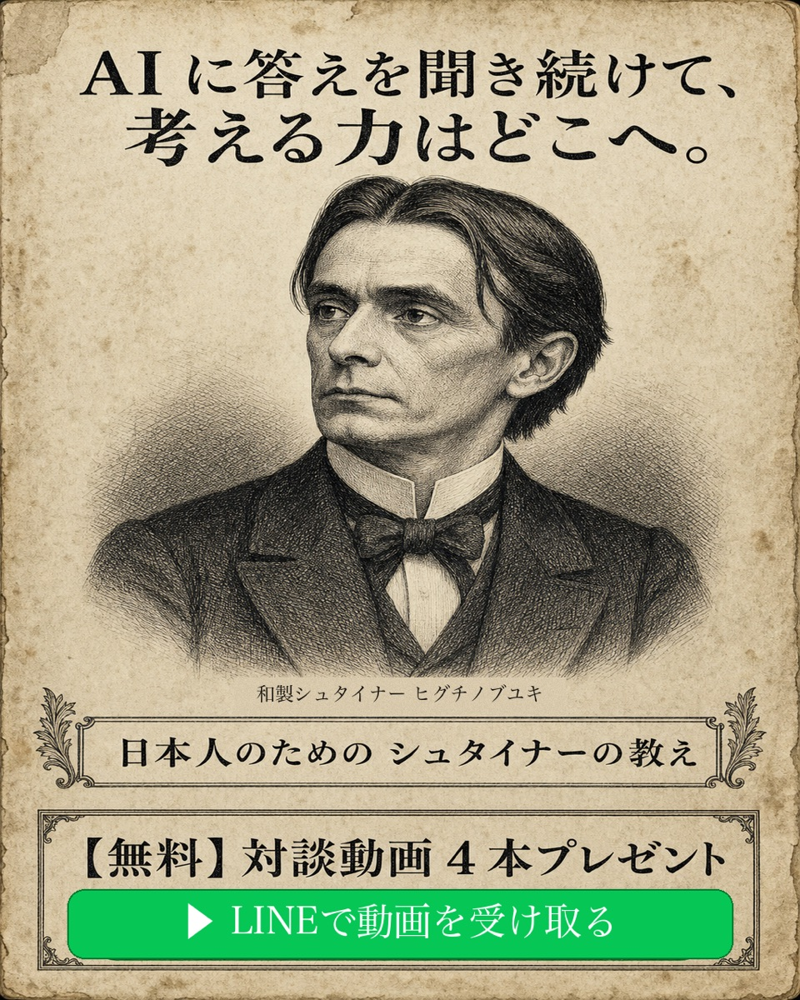
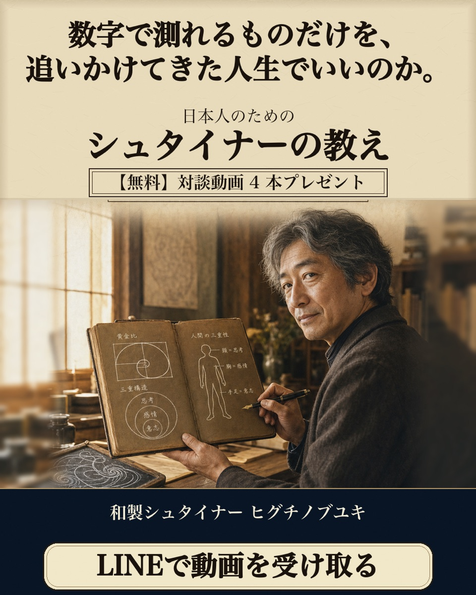
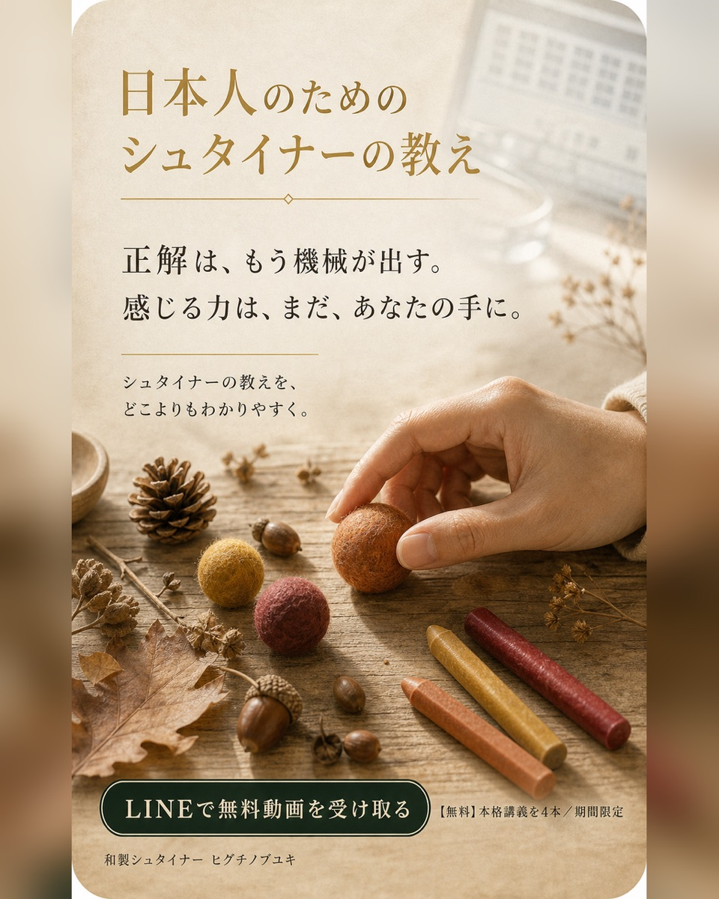
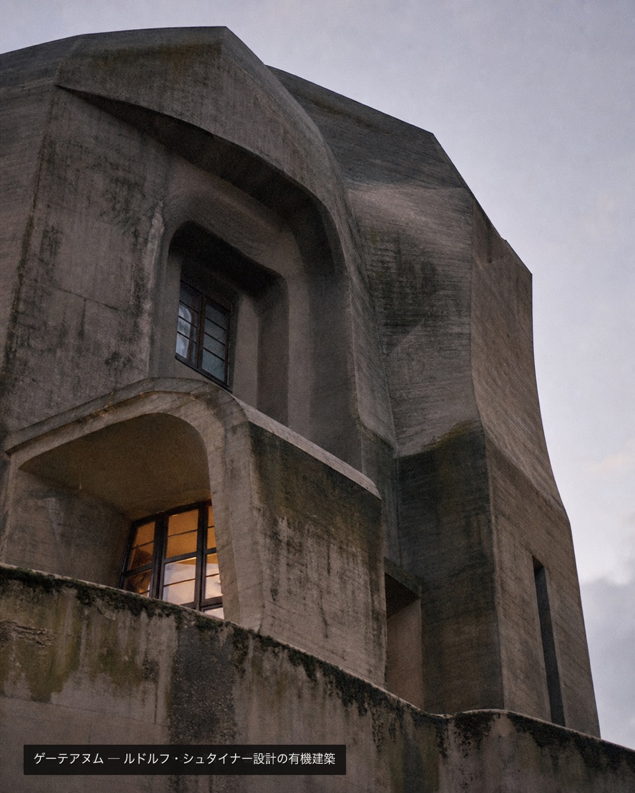
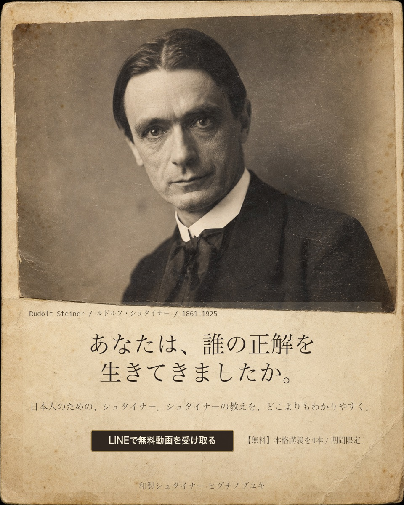
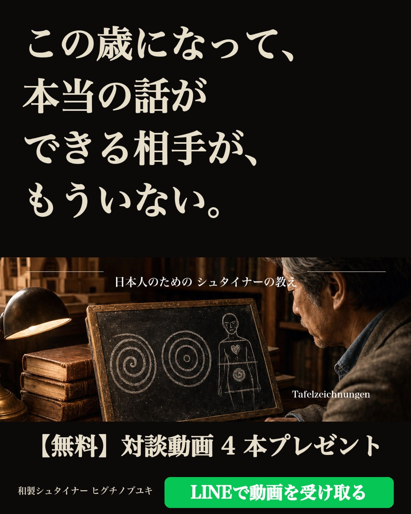
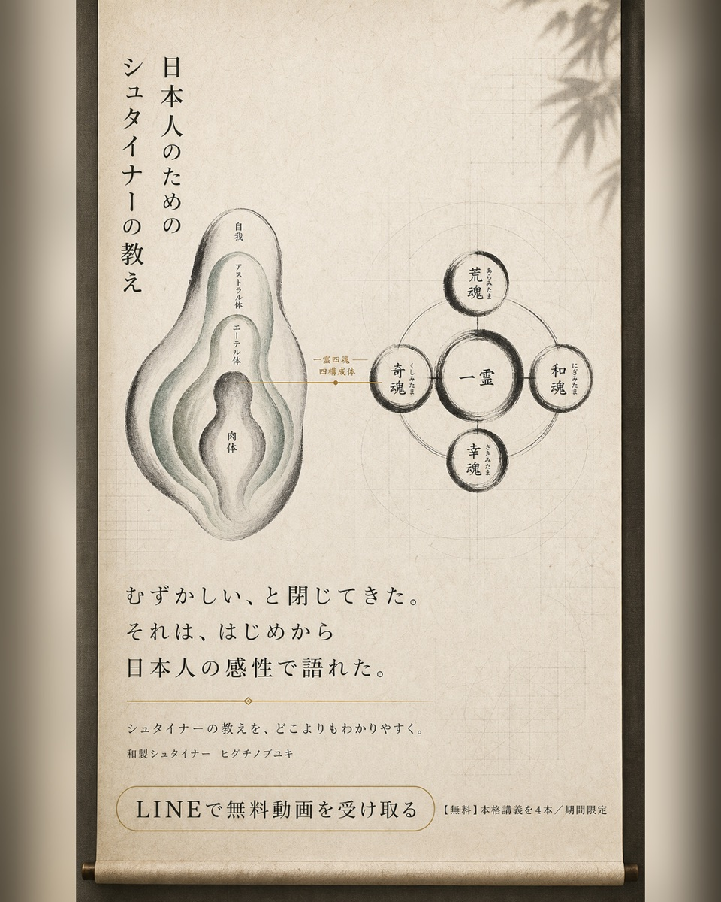
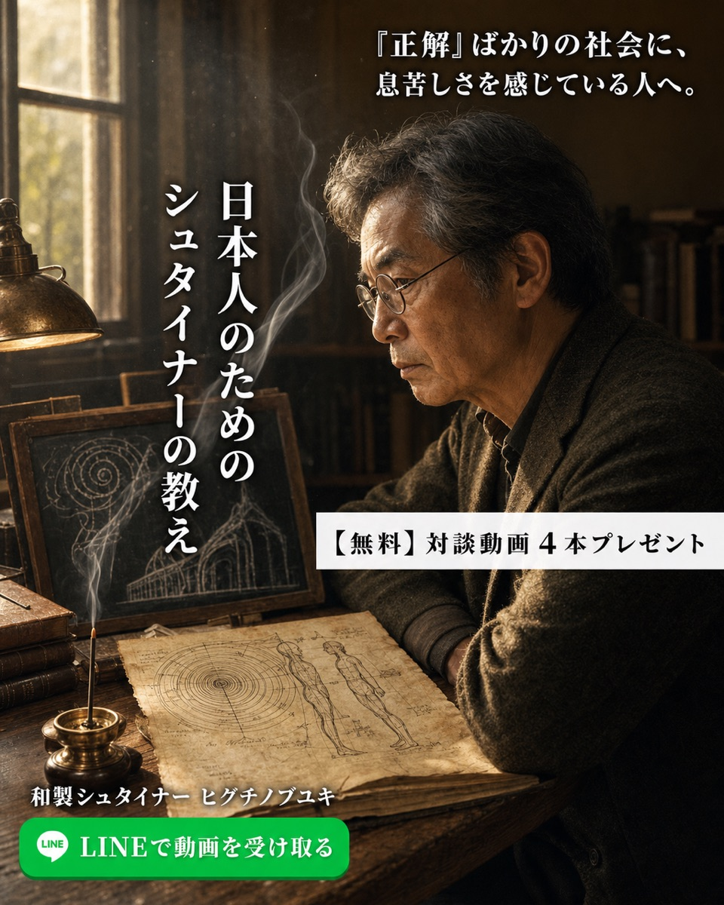

Steiners EVER001 / 10案 4:5 (zero2 / シュタイナー本人ビジュアル全案 + 画風10種分散)
案1 (α/モノクロ写真): 「このまま一生、他人の正解を生き続けるのか。」

案2 (α/カラー写真): 「稼いだ、買った、それで何が満たされた。」

案3 (ε/銅版画): 「AIに答えを聞き続けて、考える力はどこへ。」

案4 (β/ペン線画+手稿): 「KPIとPLの言葉だけで、20年。」

案5 (β/水彩にじみ): 「この歳になって、本当の話ができる相手が、もういない。」

案6 (β/フラットイラスト): 「『成績だけ』の教育に、ずっと違和感があった。」

案7 (γ/カリカチュア+古紙): 「100年前、彼はすでにこの時代を見抜いていた。」

案8 (δ/ステンドグラスモザイク): 「教育、経済、農業、建築 — 全部わかっていた人。」

案9 (γ/横顔シルエット): 「人生の後半を、誰の正解で生きるのか。」

案10 (ζ/モノクロ写真+四構成体): 「『精神を、科学する』— 100年前にそう言った人がいた。」
